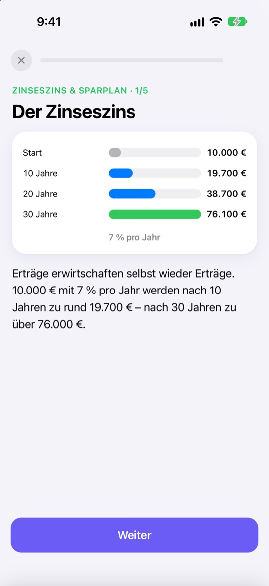

Geldanlage
Geld anlegen lernen: So startest du ohne Vorwissen
Du willst Geld anlegen, weißt aber nicht, wo du anfangen sollst? Diese Schritte führen dich vom Kassensturz über den Notgroschen bis zum ersten Sparplan, ohne Fachchinesisch.

Geld anlegen heißt, Geld, das du gerade nicht brauchst, so einzusetzen, dass es mit der Zeit mehr wert werden kann. Dafür brauchst du weder Vorwissen noch ein großes Startkapital. Wichtiger ist die richtige Reihenfolge: erst die Basis, dann das Anlegen.
Immer mehr Menschen fangen damit an. Laut Deutschem Aktieninstitut besaßen 2025 rund 14,1 Millionen Menschen in Deutschland Aktien, Aktienfonds oder ETFs, 2 Millionen mehr als im Jahr davor.
Geld anlegen für Anfänger: der Fahrplan in 6 Schritten
- Kassensturz machen: Was kommt jeden Monat rein, was geht raus?
- Teure Schulden abbauen, etwa einen Dispokredit.
- Einen Notgroschen aufbauen, der jederzeit verfügbar ist.
- Eine Sparrate festlegen, die du auch in knappen Monaten durchhältst.
- Breit gestreut anlegen, zum Beispiel mit einem Sparplan, und auf die Kosten achten.
- Dranbleiben und typische Anfängerfehler vermeiden.
Warum Geld auf dem Konto an Wert verliert
Geld auf dem Girokonto ist sicher, aber nicht wertbeständig, denn die Preise steigen. Im Oktober 2026 lag die Inflationsrate in Deutschland bei 2,8 % (Statistisches Bundesamt, November 2026). Bleibt die Teuerung ein Jahr lang so hoch, kaufst du mit 1.000 € danach nur noch so viel wie heute mit rund 973 €.
Wie stark das ins Gewicht fällt, zeigt eine Auswertung der Deutschen Bundesbank vom Oktober 2026: Die vermögensärmere Hälfte der Haushalte erzielte mit ihrem Geldvermögen im zweiten Quartal 2026 eine reale Rendite von rund minus 0,7 %, also nach Abzug der Inflation einen Verlust. Ihr Geldvermögen besteht überwiegend aus Einlagen, etwa auf Konten, und aus Ansprüchen an Versicherungen.
Das heißt nicht, dass jeder Euro an die Börse gehört. Es zeigt aber: Nichts zu tun ist auch eine Entscheidung.
Schritt 1: Kassensturz – wohin fließt dein Geld?
Am Anfang steht keine Aktie, sondern ein ehrlicher Blick auf deine Finanzen. Schreib ein bis zwei Monate lang alle Einnahmen und Ausgaben auf, in einem Haushaltsbuch, einer Tabelle oder über die Kategorien deiner Banking-App. Ein vereinfachtes Beispiel:
| Posten | Betrag pro Monat |
|---|---|
| Nettoeinkommen | 2.000 € |
| Fixkosten (Miete, Strom, Handy, Versicherungen) | 1.150 € |
| Lebensmittel und Alltag | 450 € |
| Freizeit und Sonstiges | 200 € |
| Bleibt übrig | 200 € |
Was übrig bleibt, ist dein Spielraum für Notgroschen und Sparrate. Oft findest du dabei auch Posten zum Kürzen, etwa ungenutzte Abos.
Schritt 2: Teure Schulden zuerst
Ein Dispokredit oder ein Ratenkauf kostet meist mehr Zinsen, als eine Geldanlage verlässlich einbringt. Deshalb gilt: erst teure Schulden tilgen, dann anlegen.
Schritt 3: Der Notgroschen
Der Notgroschen ist deine Reserve für Unvorhergesehenes: eine kaputte Waschmaschine, eine Reparatur am Auto, eine Nachzahlung. Die Verbraucherzentrale nennt als Faustregel einen Puffer von zwei bis drei Monatsgehältern, am besten auf einem Tagesgeldkonto (Stand Februar 2026). Wer allein verdient oder ein schwankendes Einkommen hat, plant eher mehr ein.
Guthaben auf Konten sind bei Banken in Deutschland bis 100.000 € pro Kundin oder Kunde und Bank gesetzlich abgesichert, so die Finanzaufsicht BaFin. Der Notgroschen soll keine Rendite bringen. Er sorgt dafür, dass du angelegtes Geld nie im ungünstigsten Moment verkaufen musst.
Schritt 4: Die passende Sparrate finden
Die Sparrate ist der Betrag, den du jeden Monat zurücklegst oder anlegst. Eine feste Regel gibt es nicht. Die Verbraucherzentrale rechnet in einem Beispiel mit etwa 5 % des Nettoeinkommens, dazu einem Drittel von Geldgeschenken sowie von Weihnachts- oder Urlaubsgeld. Entscheidend ist, dass du den Betrag auch in knappen Monaten und schlechten Börsenjahren durchhältst.
Ein Trick hilft: Richte einen Dauerauftrag zum Monatsanfang ein, direkt nach dem Gehaltseingang. So sparst du zuerst und gibst danach aus, statt am Monatsende zu sparen, was übrig bleibt.
Was regelmäßige Beträge über die Zeit bewirken können, zeigt ein vereinfachtes Beispiel über 20 Jahre mit zwei angenommenen Renditen, vor Kosten und Steuern:
| Sparrate pro Monat | Eingezahlt in 20 Jahren | Bei 3 % pro Jahr | Bei 7 % pro Jahr |
|---|---|---|---|
| 25 € | 6.000 € | rund 8.200 € | rund 13.000 € |
| 50 € | 12.000 € | rund 16.400 € | rund 26.000 € |
| 100 € | 24.000 € | rund 32.800 € | rund 52.100 € |
| 200 € | 48.000 € | rund 65.700 € | rund 104.200 € |
Schritt 5: Der ETF-Sparplan, neutral erklärt
Ein ETF ist ein börsengehandelter Fonds, der meist einen Index nachbildet, etwa einen Welt-Aktienindex. Mit einem Anteil bist du an vielen Unternehmen gleichzeitig beteiligt. Wie das genau funktioniert, erklärt der Artikel Was ist ein ETF?.
Bei einem ETF-Sparplan kauft deine Bank oder dein Broker jeden Monat automatisch für einen festen Betrag Anteile, auch Bruchstücke davon. Laut Deutschem Aktieninstitut hatten 2025 rund 12,1 Millionen Menschen in Deutschland Aktienfonds oder ETFs. So läuft der Start ab:
- Depot eröffnen bei einer Bank oder einem Online-Broker. Vergleiche Depotgebühren und Sparplankosten.
- Fonds auswählen: Welchen Index bildet er ab, wie breit ist er gestreut, wie hoch sind die laufenden Kosten (TER)?
- Betrag und Termin festlegen, zum Beispiel 50 € am Monatsersten.
- Laufen lassen und den Plan ein- bis zweimal im Jahr prüfen, nicht täglich.
Die Fondsanteile in deinem Depot bleiben dein Eigentum, auch wenn die Bank pleitegeht. Unter die Einlagensicherung fallen sie laut BaFin aber nicht, und vor Kursverlusten schützt dich das Eigentum nicht: Fällt der Markt, fällt auch der ETF.
Ein ETF-Sparplan ist ein verbreiteter, aber nicht der einzige Weg. Tagesgeld, Festgeld, Anleihen oder klassische Fonds haben ebenfalls ihren Platz, je nachdem, wann du das Geld brauchst. Welche Anlage zu dir passt, hängt von deinen Zielen, deinem Zeitraum und deiner Risikobereitschaft ab.
Risiko und Streuung: nicht alles auf eine Karte
Risiko heißt an der Börse vor allem: Der Wert schwankt, und du kannst zeitweise oder dauerhaft Geld verlieren. Drei Grundsätze helfen, damit umzugehen:
- Streuen: Verteile dein Geld auf viele Unternehmen, Branchen und Länder. Wer nur eine Aktie besitzt, hängt am Schicksal einer einzigen Firma. Fachleute nennen das Klumpenrisiko.
- Zeitraum beachten: Geld, das du in den nächsten Jahren sicher brauchst, gehört nicht in Aktien. Je länger du es nicht brauchst, desto eher lassen sich Schwankungen aussitzen. Eine Garantie gibt es nicht.
- Aufteilen: Viele kombinieren einen sicheren Teil, etwa Tagesgeld, mit einem schwankenden Teil in Aktien. Je größer der Aktienanteil, desto stärker schwankt das Vermögen insgesamt.
Frag dich vorher ehrlich: Wie würdest du reagieren, wenn dein Depot 30 % im Minus liegt? Dass solche Einbrüche vorkommen, zeigt der Artikel Bulle und Bär mit Beispielen aus der Börsengeschichte. Den Zusammenhang von Rendite, Sicherheit und Verfügbarkeit erklärt der Fahrplan Investieren lernen.
Kosten: der unterschätzte Renditefresser
Jeder Euro Kosten fehlt dir später doppelt: als Geld und als Zinseszins. Diese Kosten können anfallen:
| Kostenart | Was das ist |
|---|---|
| Laufende Kosten (TER) | jährliche Gebühr des Fonds, in Prozent des Anlagebetrags |
| Ordergebühr | Gebühr pro Kauf oder Verkauf |
| Sparplangebühr | Gebühr pro Ausführung, bei manchen Anbietern 0 € |
| Spread | Unterschied zwischen Kauf- und Verkaufskurs |
| Depotgebühr | jährliche Gebühr für das Depot, bei vielen Anbietern 0 € |
| Ausgabeaufschlag | einmaliger Aufschlag beim Kauf, vor allem bei klassischen Fonds |
Zwei Rechenbeispiele:
- Feste Gebühren: Kostet jede Sparplan-Ausführung 1,50 €, sind das bei 25 € Sparrate 6 % jeder Einzahlung, bei 100 € nur 1,5 %. Bei kleinen Beträgen fallen feste Gebühren besonders ins Gewicht.
- Laufende Kosten: 100 € im Monat über 20 Jahre, 7 % Rendite pro Jahr vor Kosten. Bei 0,2 % laufenden Kosten stehen am Ende rund 50.800 €, bei 1,5 % rund 43.600 €. Der Unterschied beträgt rund 7.300 €, bei gleicher Einzahlung von 24.000 €.
Typische Anfängerfehler
- Ohne Notgroschen starten. Dann musst du im Notfall verkaufen, womöglich mitten in einem Kurssturz.
- Alles auf eine Aktie oder einen Trend setzen. Was gerade alle kaufen, ist oft schon teuer geworden.
- Auf den perfekten Zeitpunkt warten. Niemand kann ihn zuverlässig vorhersagen. Ein Sparplan nimmt dir diese Entscheidung ab.
- Bei Kursverlusten in Panik verkaufen. Damit wird aus einem Verlust auf dem Papier ein echter Verlust.
- Tipps aus sozialen Medien ungeprüft folgen. Manche Empfehlung ist bezahlte Werbung, und kein Video kennt deine Lage.
- Hebelprodukte kaufen, ohne sie zu verstehen. CFDs oder Knock-out-Zertifikate vervielfachen Gewinne und Verluste. Für den Einstieg sind sie keine Übungswiese.
Geld anlegen üben, ohne echtes Geld
Bevor du echtes Geld einsetzt, kannst du die wichtigsten Entscheidungen ohne Risiko durchspielen:
- Rechnen: Spiel mit einem Sparplanrechner verschiedene Sparraten, Laufzeiten und Renditen durch.
- Schwankungen erleben: In einem Börsenspiel oder Depot-Simulator siehst du, wie sich ein Minus von 20 % anfühlt, ohne dass es wehtut. Einen Überblick gibt der Artikel Börsenspiel-App und Aktien-Simulator.
- Grundlagen trainieren: In der App InQuestly erklärt der Gratis-Kurs „Investieren 101“ Notgroschen, Depot, Kosten, Streuung und typische Fehler in Lektionen von rund fünf Minuten, jeweils mit Quiz. Mit Prognosen, die am Stichtag mit echten Schlusskursen ausgewertet werden, übst du, Märkte einzuschätzen, ganz ohne echtes Geld.
Wenn die Grundlagen sitzen, kannst du mit einem kleinen Betrag beginnen und ihn später erhöhen.
Häufige Fragen
Wie fange ich an, Geld anzulegen?
Mit einem Kassensturz. Danach baust du teure Schulden ab und legst einen Notgroschen an. Erst dann investierst du regelmäßig einen festen Betrag breit gestreut, zum Beispiel über einen Sparplan.
Wie viel Geld brauche ich, um mit dem Anlegen anzufangen?
Kein großes Startkapital. Viele Banken und Broker bieten Sparpläne schon ab wenigen Euro im Monat an. Wichtiger als die Höhe ist, dass du regelmäßig dabeibleibst.
Wie hoch sollte mein Notgroschen sein?
Die Verbraucherzentrale nennt als Faustregel zwei bis drei Monatsgehälter auf einem Tagesgeldkonto. Die passende Höhe hängt von deiner Lage ab.
Ist ein ETF-Sparplan sicher?
Im Sinne von garantiert nicht: Fällt der Markt, sinkt auch der Wert deiner Anteile. Die Anteile bleiben aber dein Eigentum, auch wenn deine Bank pleitegeht.
Was ist der Unterschied zwischen Sparen und Anlegen?
Beim Sparen legst du Geld zurück, etwa auf einem Konto. Beim Anlegen setzt du es so ein, dass es Ertrag bringen soll, zum Beispiel in Fonds oder Aktien, und nimmst dafür Schwankungen in Kauf.
Kann ich Geld anlegen lernen, ohne Geld zu riskieren?
Ja. Mit Artikeln, Sparplanrechnern, Börsenspielen und Lern-Apps wie InQuestly übst du die wichtigsten Entscheidungen ohne echtes Geld.
Quellen und Stand
- Deutsches Aktieninstitut, Aktionärszahlen 2025 (Kantar-Befragung von rund 28.000 Personen ab 14 Jahren), veröffentlicht am 13. Januar 2026
- Statistisches Bundesamt (Destatis), Inflationsrate im Oktober 2026: +2,8 %, Pressemitteilung Nr. 392 vom 11. November 2026
- Deutsche Bundesbank, Geldvermögensbildung und Außenfinanzierung in Deutschland im zweiten Quartal 2026, Pressemitteilung vom 20. Oktober 2026
- Verbraucherzentrale, Ratgeber „Sparen“ (Reihe „Laura zieht aus“) zu Notgroschen und Sparbetrag, Stand 12. Februar 2026
- BaFin, Einlagensicherung: gesetzlicher Schutz bis 100.000 Euro pro Kundin oder Kunde und Bank, Wertpapiere sind nicht erfasst (abgerufen am 28. November 2026)
Stand: 28. November 2026.
Dieser Artikel dient der Bildung und ist keine Anlageberatung. Beispiele sind vereinfacht und ohne Steuern dargestellt.